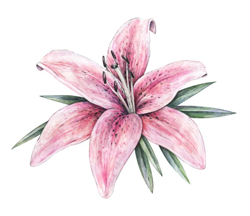

~~ I ~~
Saltimbanquis y azucenas coloreaban la noche agazapada de negro, mientras azul dormitaba la mañana.
- ¡Qué bien que te lo montas Sol! Todos nosotros trabajamos sin descanso mientras tú duermes como un lirón.
- Un poco de jaleo no vendría mal. ¡De todo tiene que haber para que nadie se aburra!
- No me aburre la piroplástica abundancia de letras multitudinarias. Pero me enloquece su serenata de diapasón. Cuando llegue veré lo que decido.
- Un poco de montonera más azul marino y enloqueceré satisfactoriamente.
- Me molesta, pero no lo sugiero siquiera. Me distraigo en el balcón.
Fin.